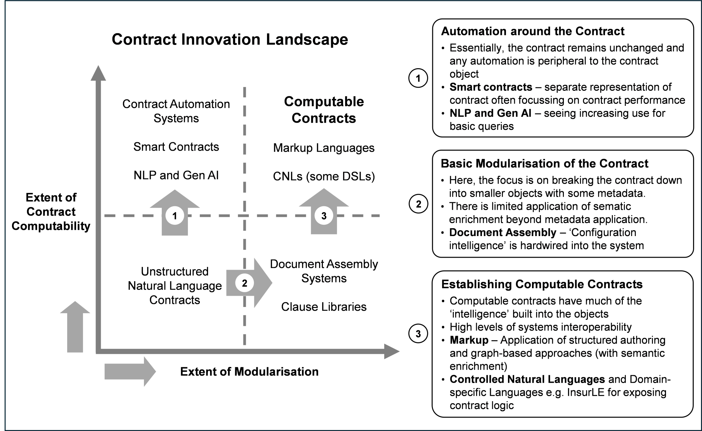

The main objective here is to make commercial insurance contracts more computable. This goal can be considered within the context of a ‘contract innovation landscape[18]’, shown in Figure 2, “The Contract Innovation Landscape”.
This two-dimensional landscape is created based on the:
Extent of contract modularisation, essentially breaking the contract down into smaller components, thus creating the foundations for dynamic contract configuration.
Extent of contract computability through building a formal (or machine readable) representation of the contract.
Starting in the bottom left-hand corner of the contract innovation landscape, it is argued that most (and if not all) policy wordings in the commercial insurance space occupy this quadrant. Policy wordings are stored as monolithic objects in pdf or Microsoft word format, often with little content management discipline.
Most of the contract innovation to date, and particularly in the insurance space, has taken the form of ‘automating around the contract’ in order to increase levels of computability (shown as transition ‘1’ in Figure 2, “The Contract Innovation Landscape”). Importantly, the increased computability is achieved through building a largely separate representation of the contract. A good example here are smart contracts, essentially pieces of computer code that enable the performance of parts of the contract to be undertaken e.g. monthly payments on an automatic basis. One could argue that direct debit payments are smart contracts, a technology that has been around for decades.
The ’hard yards’ of increasing contract modularity (i.e. moving from the bottom-left to the bottom-right quadrant) have yet to be taken by most companies in the insurance industry. The monolithic nature of policy wordings means than contract component reusability rarely happens and that the updating of policy wordings (even for very minor changes such as an address) is extremely inefficient. Where modular approaches are adopted in commercial insurance, the level of granularity tends to be low i.e. the modular objects are still relatively large in terms of the amount of content.
Figure 2. The Contract Innovation Landscape
 |
The top-right quadrant is the home of computable contracts, and where the contract object and its digital representation are one and the same thing. Keeping the ‘contract close to the code’ means that there is a greater guarantee that any automated functions will be faithful to the intent of the contract. It should be noted that the optimal path to computable contracts in insurance is transition 2 followed by transition 3.
[18] Cummins, John, and Christopher Clack. 2022. “Transforming commercial contracts through computable contracting.” Journal of Strategic Contracting and Negotiation 6, no. 1 (February): 3-25.